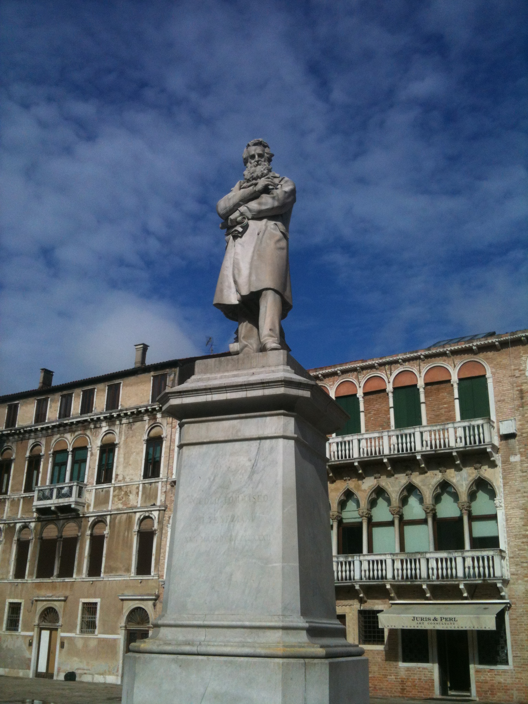

Statua Tommaseo

La statua di Niccolò Tommaseo si trova a Venezia nel Campo Santo Stefano,è posta sopra ad un basamento di marmo tra Palazzo Loredan e la Chiesa di Santo Stefano, questa statua è opera di Francesco Barzaghi che la eseguì nel 1882.
I veneziani vollero dedicare una grande scultura ad uno dei loro più grandi patrioti, Niccolò Tommaseo e così alcuni anni dopo il termine della dominazione austriaca la posero in quello che viene considerato il campo più importante della città (quella di San Marco è una piazza).
Una delle particolarità della statua di Niccolò Tommaseo è dovuta al fatto che emersero dei problemi di stabilità durante la lavorazione della figura in marmo dello scrittore.
Quindi si rese necessario porre come sostegno una pila di libri proprio al di sotto della scultura, per conferirne più robustezza.
Da questa singolare caratteristica viene il nomignolo di "cagalibri" che degli spiritosi veneziani hanno affibbiato fin dalla posa in opera a questa notevole statua.